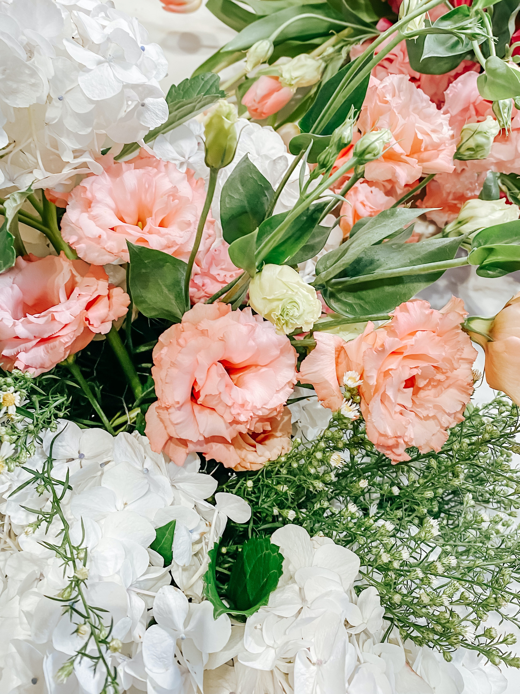

Quem Somos
Nossa Missão
Serviços
Floricultura Maria de Fátima
A mais barata de Maceió e Região!
Quem Somos
Atuamos no mercado há mais de 3 anos, nosso objetivo é deixar a vida de nossos clientes mais confortável com nossos produtos de qualidade.
Nossa Missão
Nossa missão é deixar seu ambiente mais florido e bonito com nossas flores importadas de outros países como Chile, Holanda, Japão e México.
Serviços

Nossos serviços disponíveis são:
Encomendas delivery
Pagamento via Pix ou à vista